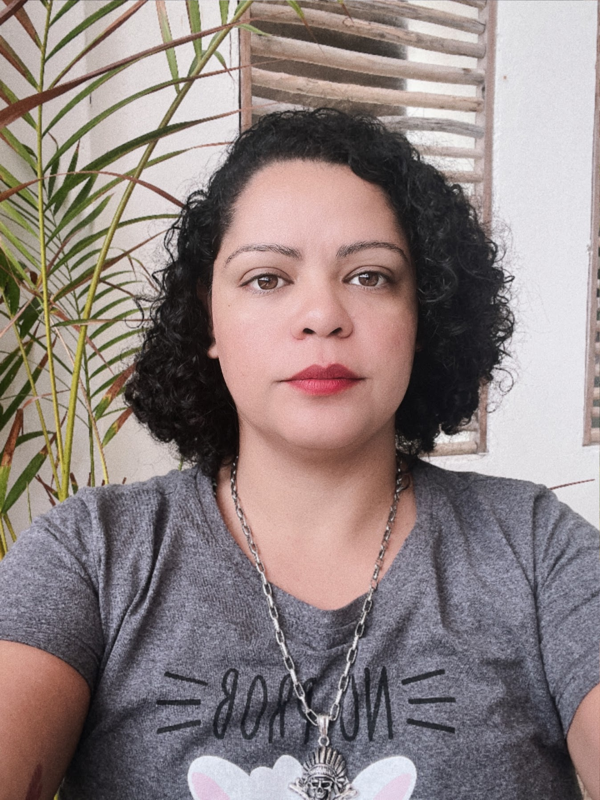

Apresentação
Possuo experiência como Desenvolvedora de Software Web e Back End, trabalhei com Ruby on Rails, ReactJs, Docker, Redis, Sidekiq, Rspec, HTML, CSS e Javascript. Tenho conhecimentos sobre a linguagem Java. Sou adepta às boas práticas de programação.
Tenho experiência com POO, alguns padrões de projeto e os princípios SOLID. Tenho experiência com as metodologias àgeis Scrum e Kanban. O meu objetivo é desenvolver softwares cada dia melhores e entregar soluções inteligentes, além de sempre me atualizar e trabalhar para contribuir com a equipe conforme as demandas interpessoais e empresariais.
